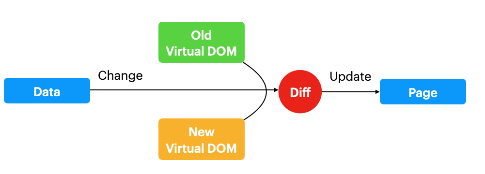

石器時代 (90 年代)
時間軸
- 1990: 第一個 Web Browser 出現
- 1994: Navigator 發布
- 1995: Javascript 由 Brendan Eich 開發
- 2002: IE 贏得瀏覽器大戰，市佔超過 96%
主流設計概念
- MVC，由 Model 負責 Data
- 除了 html, css, javascript 外，開始用到 JSP 與 Smarty 模板。雖然此時已經可以顯示後端數據，但是此時要刷新整個頁面，耗費頁面載入時間。
<!DOCTYPE html>
<html>
<head>
<meta charset="utf-8" />
<title>smarty</title>
</head>
<body>
his name is {$name}
</body>
</html>
- 2004 Google 發布 Gmail，此時可以透過
Ajax異步獲取數據刷新頁面，前端不再受限後端模板，宣告Web 2.0時代到來。
鐵器時代
jQuery出現，解決瀏覽器兼容性問題，是jQuery+Bootstrap的主流時期
$("#alert-btn").on("click", function () {
$("#app .input").val("hi");
});
- 2009 年，
AngularJS與Node.js誕生，開始了前端的工業革命時代。
工業時代
- AngularJS 引領前端的 MV
VM模式的流行，此時 Angular，React，Vue 開始出現 - MVVM 將
Controller變成View-Modellayer，作為 Model 與 View 的橋樑，由VM來同步 View 與 Model 層。
前端三大框架比較
主流設計概念
目標一致：數據驅動頁面
框架比較
Angular1
- 使用
Dirty Check，只要數據變化，就去更新 DOM 一次。
Angular(2)
- 向前不相容，引入了
TypeScript與RxJS
Vue1
- 響應式，使用
watcher監聽數據的屬性變化，就可以知道哪個Key改變了，再去修改對應的DOM。
React
-
在 Browser 的 DOM 之上，提出了
Virtual DOM概念，使用 Javascript Object 去描述整個 DOM Tree，透過 Virtual DOM 計算出變化的數據，去修改頁面。<div id="app"> <p class="item">item1</p> <div class="item">item2</div> </div>此時的 Virtual DOM 長成這樣：
{ "tag": "div", "attrs": { "id": "app" }, "children": [ { "tag": "p", "attrs": { "className": "item" }, "children": ["item1"] }, { "tag": "p", "attrs": { "className": "item" }, "children": ["item2"] } ] }

計算 Diff ，可以減少 DOM 修改，使得效率提高。
Vue 與 React 對比
- Vue 情況下，如果數據變化，框架會透過 Watcher 主動告訴你哪些數據變化了。但是當項目大時，太多 Watcher 會影響效能。
- Vue2 使用 Virtual DOM 在
Component內，Component 間使用watcher達到響應式更新，從而降低 watcher 數量。 - React 情況下，只能透過新舊數據 virtual DOM Diff 被動得知。如果 Virtual DOM Tree 太大，會使得計算時間太久，造成性能卡頓。
- React 引入了
Fiber架構，將 virtual DOM 變成 Chain，利用空閑時間計算 Diff。